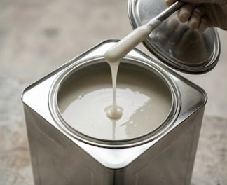
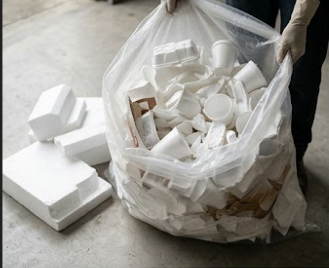
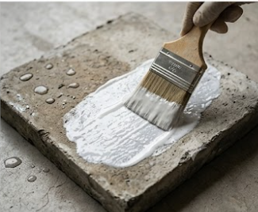

🌱 Bienvenido a DRY-ON | Impermeabilizantes ecológicos
DRY-ON
Cuenta
Favoritos
Carrito
¿Qué es DRY‑ON?
DRY‑ON es un impermeabilizante ecológico elaborado a partir de unicel reciclado y disuelto con gasolina.
Su fórmula innovadora transforma residuos en una capa protectora que cuida tu hogar y el medio ambiente.
Galería del producto



Proceso de elaboración
Recolección de unicel usado.
Lavado para eliminar grasas e impurezas.
Materiales: unicel, gasolina, recipientes y utensilios metálicos.
Disolución del unicel en gasolina.
Mezcla viscosa lista para empaque.
Aplicación sobre superficies para impermeabilizar.
Cómo obtener el producto
Puedes solicitar DRY‑ON directamente en nuestra página o por WhatsApp.